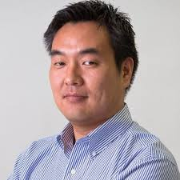
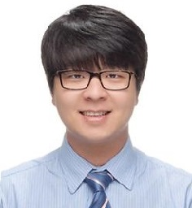
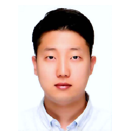
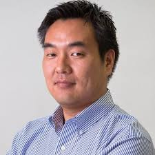
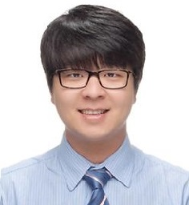
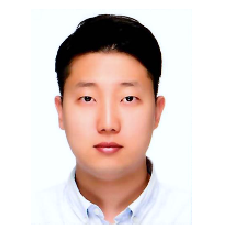

Organizing Committee
General Co-Chairs
|  |  |
| Tadashi Okoshi | JeongGil Ko |
| Keio University | Yonsei University |
Web Chair
|  |
| JaeYeon Park |
| Yonsei University |
|  |  |
| Tadashi Okoshi | JeongGil Ko |
| Keio University | Yonsei University |
|  |
| JaeYeon Park |
| Yonsei University |